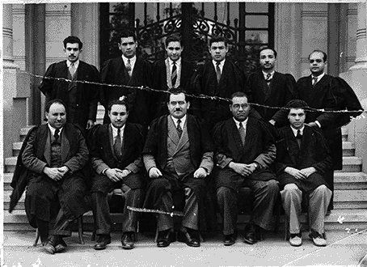

- تولي عطية عبد السلام عاشور رئاسة قسم الرياضيات التطبيقية لأول مرة عام 1959، ثم عاد لرئاسته من 1965 – 1969.
- سعى لاستشارة لجنة دولية من اليونسكو خول تطوير أقسام الرياضيات، وأوصت اللجنة بضم قسمي الرياضيات البحتة والرياضيات التطبيقية في قسم واحد.
- وفي 1971 تم تعيينه رئيساً لقسم الرياضيات بعد ضم القسمين.
- ترك رئاسة القسم في 1975 عندما تولى رئاسة الاتحاد الدولي للطبيعة الأرضية ومقاييس الأرض، والتي كانت تفرض عليه كثرة السفر للخارج. ثم عاد لرئاسة القسم في 1980 حتى بلوغه سن المعاش في سبتمبر 1984.
- اتسمت إدارته للقسم بالصرامة والخرص على اتباع اللوائح والقوانين.
- وفر تولي الدكتور محمد مرسي أخمد لوزارة التعليم العالي فرصة ذهبية للحصول على بعثات لشباب المعيدين بالقسم لتحضير الدكتوراه في الاتحاد السوفيتي ودول أوروبا الشرقية.
- عمل على توفير الفرص العلمية لأعضاء القسم عن طريق عقد اتفاقيات توفر فرصاً للسفر في منح للدكتوراه أو في مهمات علمية لما بعد الدكتوراه لفرنسا والمركز الدولي للفيزياء النظرية بإيطاليا.
- حفلت فترات إدارته للقسم بالتجديد في المقررات ومحتوياتها، حيث أفسح المجال للشباب العائدين من البعثات لتطوير المقررات.
- عمل على تفعيل تخصص الإحصاء الرياضي بالقسم ليبدأ منح درجة البكالوريوس في الإحصاء الرياضي عام 1984.
- أنشأت شعبة الحسابات العلمية بمرحلة البكالوريوس، والتي أصبحت بعد ذلك برنامج علوم الحاسب أثناء فترة إدارته للقسم.